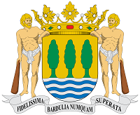
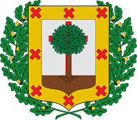
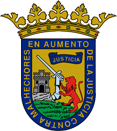

Historia
Sociedades Populares en Gipuzkoa
Las Sociedades Populares surgen y crecen en Donostia. De la Parte Vieja se extienden a otros barrios y ya en la década de 1920, cincuenta años más tarde de la fundación de Unión Artesana, el fenómeno comienza a aparecer en otras poblaciones de GIPUZKOA. En 1922 aparece Irun'go Atzegiña y viene luego la eclosión tolosarra con Gure Kaiola (1927), Gure Txokoa y Txinparta (1930), Kabi Alai y Veleta (1934), Arco Iris, Kabila, etc. Los famosos Carnavales tienen que ver en el fenómeno, como la Tamborrada lo tuvo en las donostiarras. Durante este tiempo solo nacen dos Sociedades en el resto de Gipuzkoa, Txantxiku Txoko (1927) en Oñati y Beloki (1929) en Zumarraga.
Finalizada la guerra civil se produce la extensión a todo el territorio. De forma regular, cada año se inscriben al menos cinco nuevas Sociedades y en alguno se alcanzan cifras muy altas, como las once de 1948 o las diez de 1952. Entre 1973 y 1980 se produce una auténtica explosión. Aparecen 175 Sociedades Populares nuevas, lo que supone una media casi increíble, de 22 al año. Prácticamente todas se regulan por estatutos similares a los de las donostiarras. Seguidamente las relacionamos, con la localidad donde se ubican.
| Año | Sociedades |
|---|---|
| 1973 | Eguski Alde (Aretxabaleta), Sukalde, e Izaskun (Tolosa), Kaiua, Kurpil e Itxas Mendi (Zarautz), Gure Ametsa (Bergara), Botellín, Batuak, Dardai y Uso Bide (Eibar), Irrika (Zumarraga), Lasartearra (Lasarte), Hamaika Gazte y Gurutze Txiki (Arrasate), Pasaiako (Pasai Antxo) |
| 1974 | Gure Etxetxo y Egoki (Deba), Urretxua, Sirimiri, Bazkartxo, Etxe Azpi y Akelarre (Urretxu), Uxo Toki (Billabona), Ekain, Lau Iturri y La Esperanza (Zestoa), Egokinea (Eskoriatza), Arana, Irrintzi, Landeta, Iraurgi y El Vivero (Azpeitia), Beti Jai, Aterpe, Txirikil, Ipurua, Unzaga, Jatunak, Urkuzu Gain y Dorrepe (Eibar), Ondo Beltx (Legazpia), Inda Mendi (Aia), Izaspi (Zumarraga), Leintze y Jentiloa (Arrasate) y Urpekoak (Zarautz) |
| 1975 | Onatz Gain e Izarraitzpe (Azpeitia), Bide Ona (Berrobi), Azkonanulueta (Bergara), Ondo Nai, Beti Galdu, Gure Baztarra, Beti Aserre y Bekuak (Eibar), Artxingar (Elgoibar), Ixkulin (Lezo), Zelai Ondo (Ezkioga), San Blas (Tolosa), Ertxinpe (Zestoa), Ontto-Beltz (Legazpi), Auzoak, San Gregorio y Unax (Zumarraga) |
| 1976 | Mietz Erreka y El Octavo (Arrasate), Loiolatxo (Azpeitia), Goxope, Lasai Toki, Aizpean y Beti Alegre (Bergara), Itxas Begi (Deba), Lore Toki, Baten Bi, Jaiki, Urkipe y Ospelak (Eibar), Anduaga (Ezkioga), Atxrbide (Idiazabal), Ur Txori (Ikaztegieta), Ostirala y Denak Anaiak (Irun), Pikupe Zarra (Mutriku), Barduliarrak (Ormaiztegi), Aitzalde (Oñati), La Armonía (Pasaia), Arsenal (Tolosa), Zubi Ondo (Urretxu), Erroizpe (Usurbil), Lagun Billera (Zarautz), Urtubi (Zumarraga), Bidebieta (Donostia) |
| 1977 | Gure Etxea (Alegia), Karkabal, Udalaitz Azpi, Irantsube y Torrepe (Arrasate), Txalintxo (Azpeitia), Elosua (Bergara), Txistu, Eguzki Berri y Piztu (Eibar), Saustatxo (Lasarte-Oria), Okilla (Legazpia), Pikupekoak (Oñati), Argüí Berri (Ordizia), Anarri (Orio), Kai Gain (Mutriku), Arrantzaleak (Pasaia), Iru Bide (Urretxu), Ipintza (Zestoa), Itur Gain (Zumarraga) |
| 1978 | Andoaindarra (Andoain), Bide Gain y Santa Marina (Arrasate), Iturri (Azpeitia), Beti Bizi (Beasain), Satorra (Bergara), Jolas Etxea, Erdi Bana, Izar Berri y Kamarroak (Eibar), Urdelar (Elduaien), Goiko Errotako, Mutxikin y Konporta (Elgoibar), Ernio Bide (Hernialde), Monte Jaizkibel (Irun), Uztarri (Legazpia), Txirrita (Lizarza), Narrupe (Mutriku), Aldapa Bekoa (Oiartzun), Eztaluze (Oñati), Ezbaiti (Orio), Euskaldarrak (Renteria), Carballeira (Zarautz), Txepetxa (Zumaia) |
El fenómeno de las Sociedades Populares nace y se desarrolla en Donostia, y desde aquí se extiende, primero por Gipuzkoa y luego por todo Euskal Herria. En 1936, existían 30 Sociedades en la capital y solo 13 en el resto de Gipuzkoa. Actualmente, las cifras son de 94 y 257 respectivamente.
Sociedades Gastronómicas en Bizkaia
BIZKAIA. El mimetismo anglófilo de finales del siglo XIX impregna Bilbao en su arquitectura y desarrollo urbanístico, en la moda y costumbres, en las conexiones financieras e industriales, en el deporte y en el ocio. No es extraño así que los primeros círculos de reunión de aquella sociedad imitaran a los clubes ingleses. Frente al populismo de las Sociedades donostiarras, mantenían aquellos un fuerte espíritu de clase. En Kañoietan u Ollagorra convivían amigablemente el comerciante y el pescador, el pequeño artesano y el industrial, el patrono y el empleado. En cambio, los clubes bilbaínos eran reducto de la burguesía, cerrados a otras clases sociales menos favorecidas, que intentaban olvidar sus pesares en las tascas de los barrios periféricos, antes de volver al hogar. Ello explica el escaso desarrollo de las Sociedades Populares en la capital de Bilbao.
En el resto de Bizkaia, los txokos se abren a partir del final de la guerra civil y lo hacen a imagen y semejanza de los guipuzcoanos. Su distribución territorial es irregular siendo más numerosos en las poblaciones del Este del territorio, es decir, las más próximas a Gipuzkoa.
Sociedades Gastronómicas en Álava y Vitoria-Gasteiz
En ÁLAVA y VITORIA-GASTEIZ, las primeras Sociedades surgen hacia 1960, a imagen y semejanza de las donostiarras. En algunos casos han sido creadas por trabajadores de empresas guipuzcoanas en expansión instaladas en la llanada alavesa. Como es norma en las Sociedades, las formas que adquieren son muy variadas. Señala Jesús Barredo que, a pesar de su inspiración donostiarra, el amplio abanico va desde el alavesista más reaccionario y foralista, el "vitorianico", hasta el modelo más progresista; desde la libre participación de ambos sexos hasta los vetos más contundentes; una amalgama de tendencias que incluso se conjugan en la misma Sociedad.
También al modo de las Sociedades donostiarras, en Gasteiz llevan "segundos apellidos" que definen otras actividades, aparte de la gastronómica: y así se denominan "culturales", "recreativas" o "deportivas". Pero hay una característica propia en este asociacionismo gasteitarra y es el fenómeno inverso de cuadrillas de blusas, o de grupos integrantes de txarangas, que participan activamente en las Fiestas de la Blanca y que para no romper la cohesión, para seguir manteniendo un contacto estable, acondicionan un local con su cocina ante la que se reúnen degustando variados guisos: las patatas guisadas, los caracoles y perretxikos, las diversas recetas del bacalao... Y así unidos, están en disposición de participar en otras actividades, como son las fiestas patronales del barrio, actividades deportivas señaladas o excursiones montañeras.
La entrada de mujeres, como ha sucedido en otros lugares, es uno de los temas más polémicos. Algunas, como Ametz, permiten el acceso salvo al espacio de cocina y a la barra. Otras, como Gure Sukaldea, lo limitan a determinadas horas o días. Finalmente hay otras donde no existen restricciones. Es ésta la meta hacia la que tienden las Sociedades alavesas, al igual que en los territorios hermanos.
Fuente de consulta: Sociedades Gastronómicas